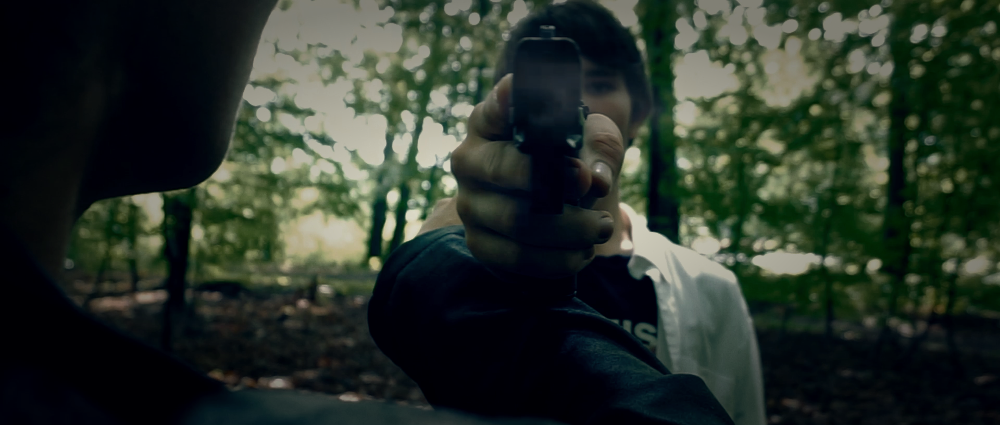
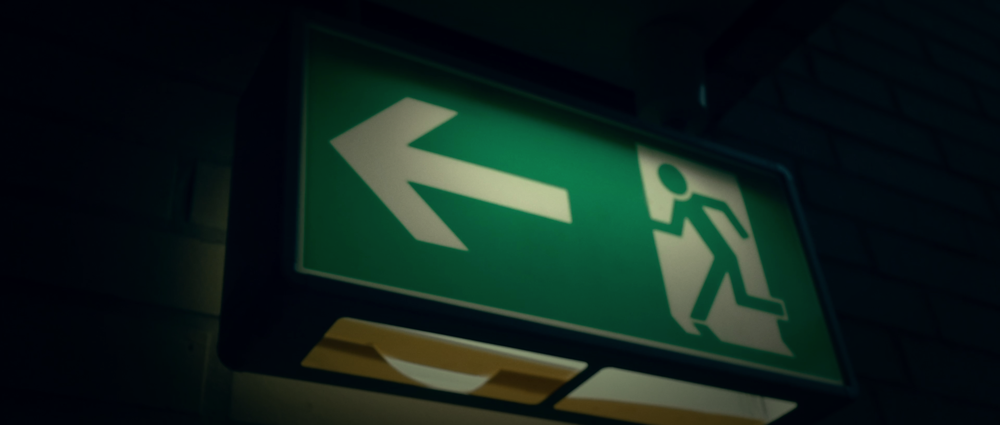

Bild für Bild — jede Entscheidung hat einen Grund.

Overhead. Protagonist liegt auf dem Waldboden. Figuren am Rand des Frames.
Drohne senkrecht nach unten. Der Protagonist als Punkt im Grün — umgeben von dem, was er sich einbildet. Dieselbe Einstellung markiert den Übergang zwischen Realität und Psychose: von hier aus fliegt die Drohne hoch, bis nur noch Wald zu sehen ist, dann runter — und plötzlich trägt das Polizeiteam Militärkleidung.

Protagonist in Bewegung. Figuren im Rücken, Wald verwischt.
Handkamera mit Bewegungsunschärfe im Hintergrund — die Figuren hinter ihm sind scharf genug um wahrgenommen zu werden, unscharf genug um unklar zu bleiben: Polizisten oder Einbildung? Die schwarze Lederjacke als einziges konstantes Erkennungsmerkmal des Protagonisten durch den gesamten Film.

Protagonist läuft. Pistole in der Hand. Figuren links und rechts.
Weite Einstellung, Handkamera — kein Stativ. Die Pistole ist sichtbar, aber der Fokus liegt auf dem Gesicht: Panik, kein Plan. Die Figuren im Bild sind Teil der Szene oder Teil der Psychose — der Schnitt gibt erst später Auskunft. Natürliches Gegenlicht durch das Blätterdach.

Protagonist im Profil. Figuren auf offener Blende weggezoomt.
Langer Brennweite-Einsatz: Die unscharfen Figuren im Rücken sind bewusst nicht identifizierbar. Seitenprofil statt Frontal — der Protagonist schaut nicht zur Kamera, sondern in eine Richtung, die der Zuschauer nicht sieht. Natürliches Seitenlicht durch das Baumlaub.

DJI Drohne zwischen Baumwipfeln. Produktionsdokument.
Das Werkzeug selbst als Bild. Die Drohne ermöglicht die Overhead-Shots, die dramaturgisch die Übergänge zwischen Bewusstseinsebenen markieren — von subjektiver Bodenkamera zur allwissenden Vogelperspektive, die zeigt, was der Protagonist nicht sieht: dass er allein ist.

Kamera auf dem Boden, Weitwinkel, Bäume in alle Richtungen.
Extremer Untersicht, Weitwinkel — die Bäume als Käfig. Diese Perspektive entspricht dem Moment, in dem der Protagonist am Boden liegt oder die Kontrolle verliert. Der blaue Himmel in der Mitte: der einzige Ausweg, unerreichbar. Kein künstliches Licht — ausschließlich natürliches Gegenlicht.

POV-Shot. Pistole direkt auf den Zuschauer gerichtet. Schütze im Hintergrund.
Die Kamera als Auge des Protagonisten — oder des Opfers. Der Schütze ist unscharf, die Waffe scharf: die Einstellung macht den Zuschauer zum Ziel. Natürliches Gegenlicht aus dem Wald hinter dem Schützen sorgt für Silhouettierung. Wer zielt, ist dieser Einstellung nicht eindeutig zu entnehmen.

Vogelperspektive. Protagonist liegt auf Herbstlaub. Pistole neben ihm.
Overhead-Shot von oben — Drohne oder erhöhte Position. Der Protagonist liegt in der Mitte des Frames, symmetrisch, die Pistole am Rand. Die Herbstblätter als Teppich erden die Szene: kein Kunstblut, kein Make-up-Tod, nur ein Körper auf dem Boden des Waldes, den er gesucht hat. Psychiater finden ihn hier.

Das Kind schaut direkt in die Kamera. Wald im Hintergrund.
Das einzige Mal, dass eine Figur direkt in die Kamera schaut — und damit direkt den Zuschauer ansieht. Das Kind bricht die vierte Wand dort, wo der Protagonist es nicht tut. Natürliches Licht, Herbstlaub auf dem Boden: die Jahreszeit ist anders als die Waldszenen mit dem Protagonisten — eine weitere Dissonanz, die auf das Eingebildete hinweist.

Protagonist. Blut im Gesicht. Pistole an die eigene Schläfe gehalten.
Der Moment des totalen Zusammenbruchs. Grüner Teal-Tint im Hintergrund — derselbe Farbton wie die Psychiatrie-Innenräume, mitten im Wald. Das Blut im Gesicht: Make-up oder Kampf. Die Pistole richtet sich gegen ihn selbst: Jäger und Gejagter sind dieselbe Person.

Notausgangsschild. Dunkel. Grünes Licht als einzige Lichtquelle.
Das Notausgangsschild als Practical Light — kein Panel, kein Gel. Dasselbe Prinzip wie in Berry Tea, andere Umgebung: die Psychiatrie-Innenräume werden ausschließlich durch dieses Schild beleuchtet. Der grüne Stich ist kein Color Grading, sondern das Licht, das tatsächlich da war. Der Ausweg ist ausgeschildert — aber der Protagonist findet ihn nicht.